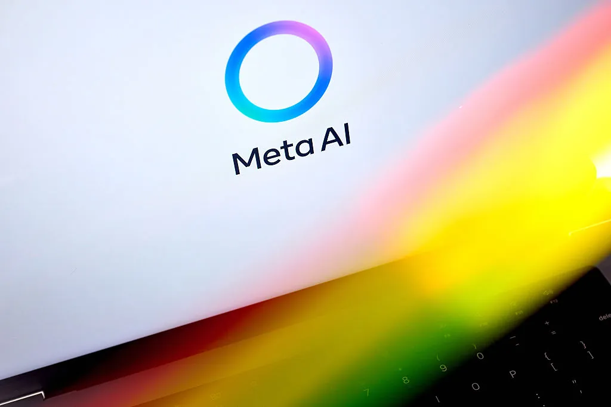
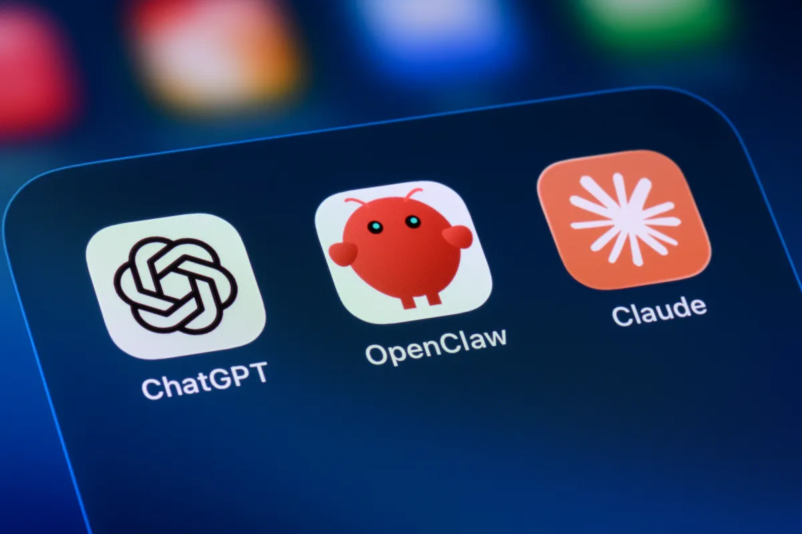
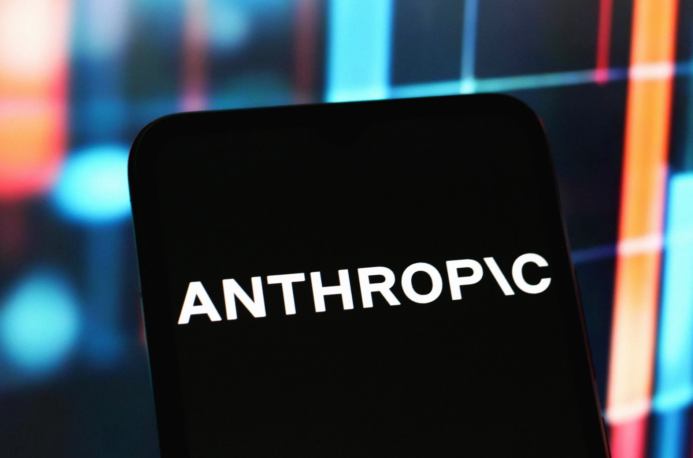
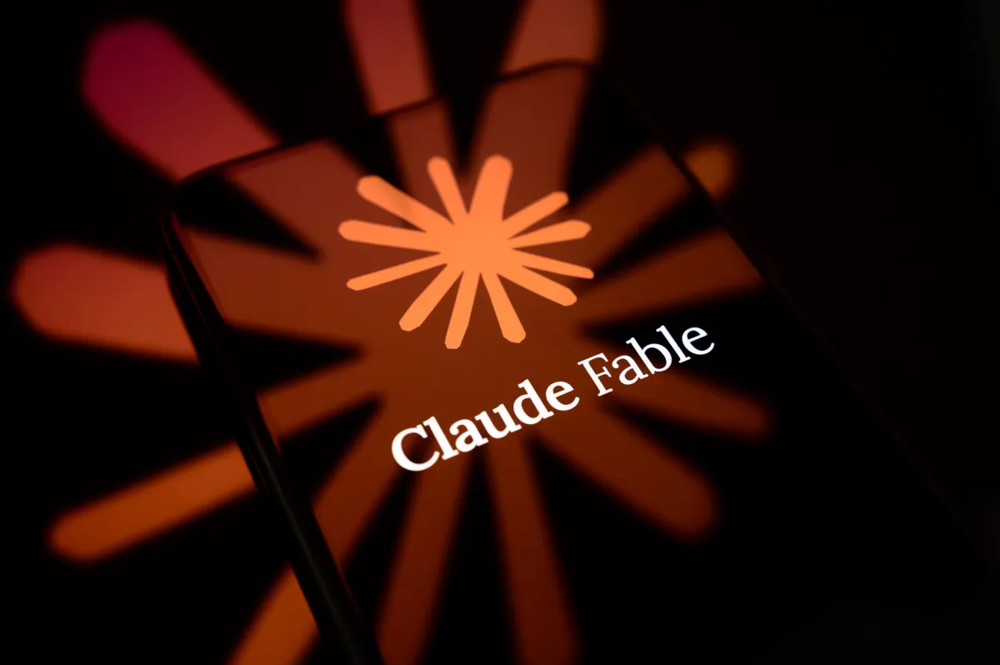
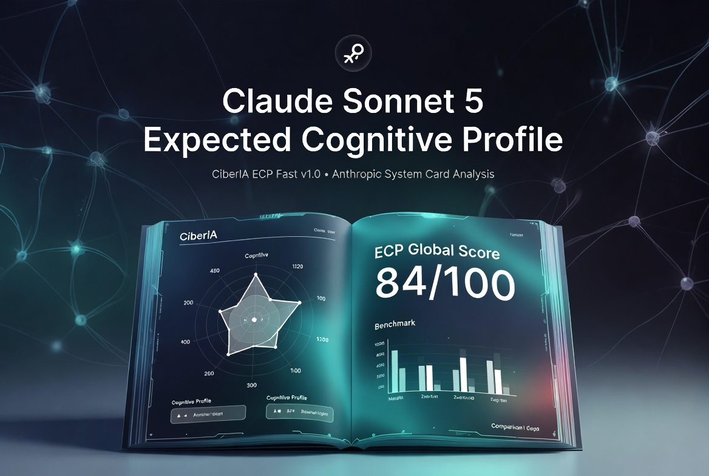
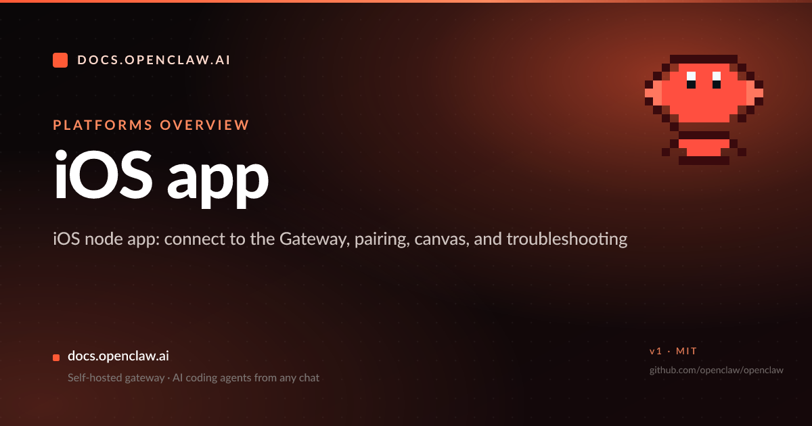
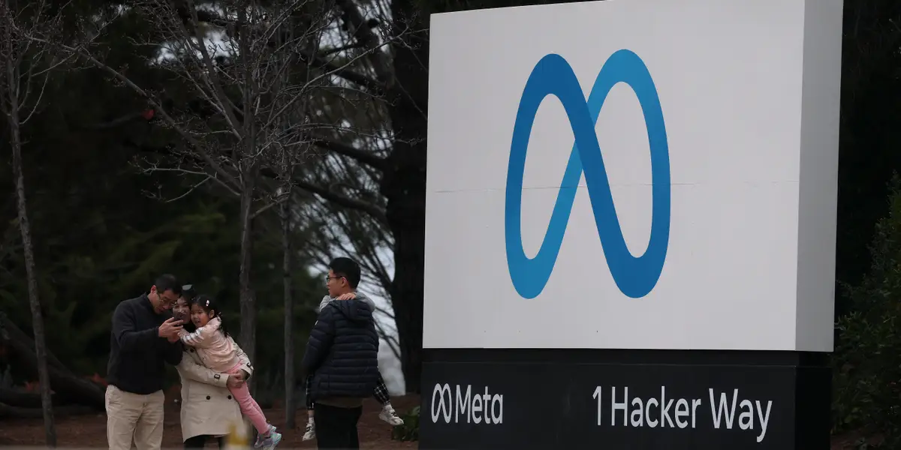
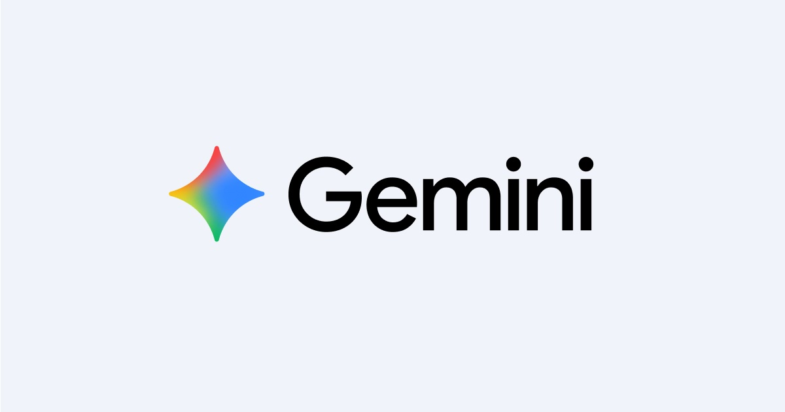

Janet 快车箱
AI Daily Briefing
2026-07-02
VOL 275
对中国创作者和中小企业来说，别再只盯“哪个模型更聪明”。真正影响账单的是 Agent 能不能进你的文件、手机、审批流和本地网关；真正影响利润的是算力是不是被云厂、社交平台和模型公司层层加价。能把模型接入业务的人会涨价，只会复制 prompt 的人会被压价。
接下来 2-4 周要盯三件事：美国对前沿模型访问的安全门槛会不会继续反复；Meta Compute 这类“卖剩余算力”的路子会不会变成大厂回本模板；桌面和移动 Agent 是否从演示走向稳定执行。入口一旦稳定，收费和责任都会跟着落下来。

TechCrunch 报道，美国政府已取消 Anthropic 在向海外提供 Mythos 和 Fable 模型前必须取得许可的要求。该限制此前切断了外部用户对 Anthropic 最先进模型的访问，Anthropic 表示会从 7 月 1 日起恢复 Fable 访问。

TechCrunch 援引 Bloomberg 报道称，Meta 正在规划云基础设施业务，准备出售 AI compute 和模型访问。报道提到 Meta 已承诺未来投入 1829 亿美元建设 AI 基础设施，并可能用 Meta Compute 模式回收部分投入。

Venice AI 宣布完成 6500 万美元 Series A，估值达到 10 亿美元。公司称其提供 200 多个模型，主打隐私和较少内容限制，已有超过 300 万活跃用户、日均 170 万次 API 调用，并实现超过 7000 万美元年化收入。

Google Gemini for macOS 页面显示，Gemini Spark 已进入 Mac 工作流，可在用户授权下整理本地文件、汇总资料并写入 Google Docs 和 Sheets。该功能先面向支持地区的 Google AI Ultra 成年用户推出。

TechCrunch 报道，开源 AI Agent OpenClaw 已推出 iOS 和 Android 应用。新应用连接用户自托管的 OpenClaw Gateway，用于聊天、语音、审批和设备感知自动化。

Anthropic 在限制解除后表示，会从 7 月 1 日起恢复 Fable 访问。Axios 和 TechCrunch 均提到，此前限制与美国政府对高风险前沿模型的安全担忧有关，后续标准仍不稳定。

TechCrunch 称，Mythos 被视为 Anthropic 最先进的 AI 模型之一，早前限制切断了非美国用户访问。相关报道把它和网络安全、生物安全等风险审查联系在一起。

TechCrunch 报道称，Meta 可能在新云业务中出售多种 AI 模型访问，其中包括其近期推出的闭源模型 Muse Spark。该计划会把 Meta 从只开放 Llama，推向直接托管和销售模型的云入口。

Hugging Face 博客上发布的社区评估称，Claude Sonnet 5 的自动化 AI R&D 能力没有越过高风险阈值，在化学、生物风险上的提升有限，网络安全防护与 Opus 4.7/4.8 相近。

Meta 的 AI 基础设施承诺支出已达 1829 亿美元，TechCrunch 称其正在考虑像 CoreWeave 一样出售 raw compute，并可能托管多种模型。这个动作把 AI 基建从内部成本中心推向外部收入线。

Gemini for macOS 的官方说明显示，Spark 可以在授权后读取本地文件，并把整理结果写入 Google 文档和表格。Google 还提示未来会让用户从手机远程触发 Mac 上的多步任务。

OpenClaw 的 iOS 文档说明，手机应用可作为安全节点连接 Gateway，支持推送、分享、实时语音和审批。公开版本不支持随意改自定义 push relay，私有 relay 需要单独构建路径。
TechCrunch Disrupt 2026 Builders Stage 公布议程，其中包括“What Happens When OpenAI Ships Your Roadmap”“Hiring When AI Is a Co-Founder”和多模型架构等主题，直接把 AI 创业公司的护城河焦虑摆上台面。

Venice AI 称其已实现超过 7000 万美元年化收入，并在首轮外部融资中拿到 6500 万美元，估值 10 亿美元。公司计划用资金购买 GPU、建设自有数据中心，以减少租赁 GPU 对毛利的拖累。

Business Insider 报道称，Meta 股价因其计划出售多余 AI compute 的消息上涨。相关报道提到，投资人一直担心巨额 AI 开支回报，云算力转售给了 Meta 一个更直接的收入故事。
Investing.com 报道，Qualcomm 扩大与 Hugging Face 的合作，计划把 Hugging Face 生态中的 AI 模型部署到手机、PC、可穿戴、工业、汽车、边缘设备和数据中心平台上，并用 Agent 处理设置、优化和部署。

Gemini for macOS 现在提供桌面快捷入口、屏幕上下文、语音输入，并开始为 AI Ultra 用户提供 Gemini Spark 自动化能力。用户可让 Spark 整理本地文件、汇总资料并生成 Google Docs 或 Sheets。